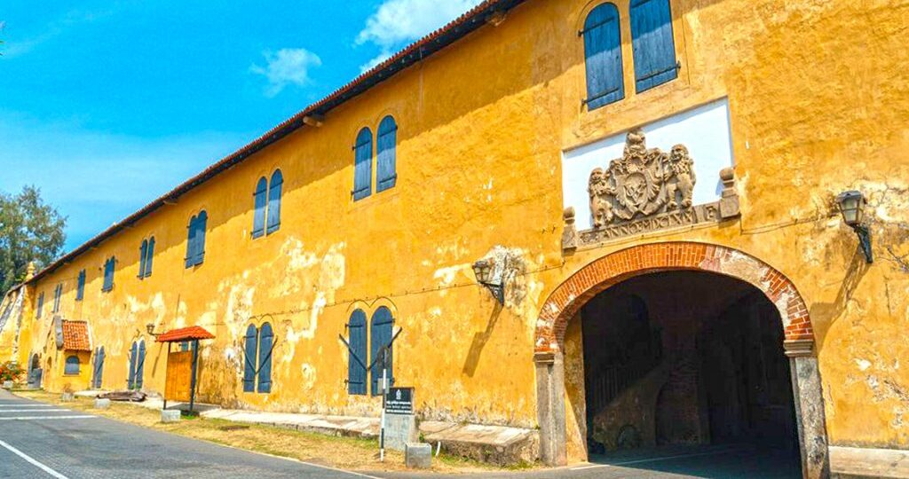
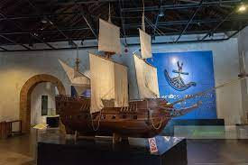
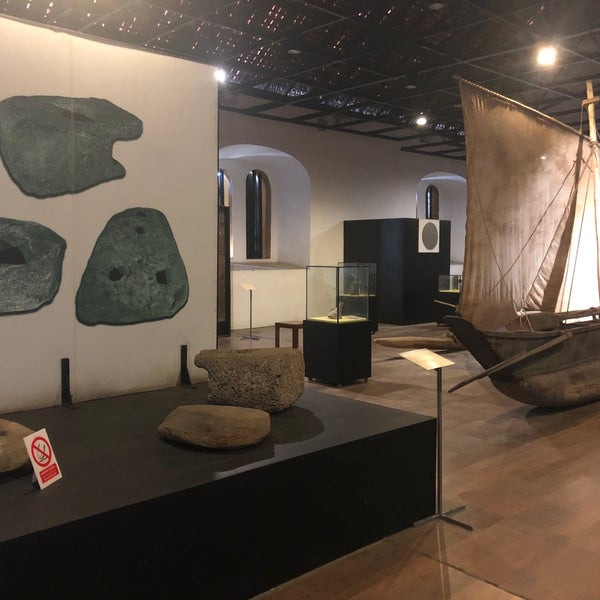
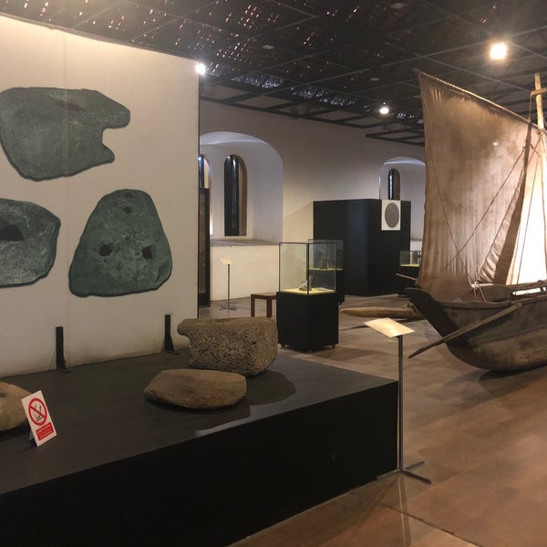
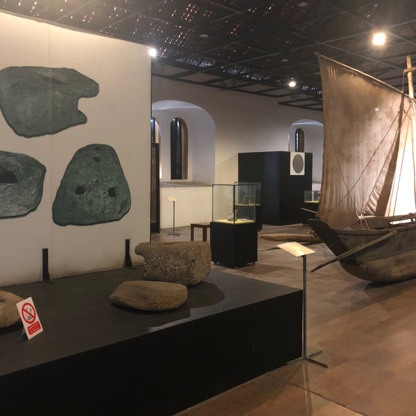

 


Maritime Museum
It is a known fact that Sri Lanka and the Galle harbour is known for its trade through the sea. The Maritime Museum is amongst those tourist places in Galle takes you back to the Dutch East India Trading Company’s trade routes and relics.
This place is a great way to understand the history of Sri Lanka and the attacks it faced. You can see some marine items, boat models, etc. in this valuable warehouse.
Location: Queens Street, Galle Dutch Fort
Time: 08.30 a.m. to 05.00 p.m. (08.00 a.m. on Saturday)
Entrance Fee: 20 LKR (USD 0.11) for adults and 10 LKR (USD 0.057) for children; 300 LKR (USD 1.70) for adults and 150 LKR (USD 0.85) for children
This place is a great way to understand the history of Sri Lanka and the attacks it faced. You can see some marine items, boat models, etc. in this valuable warehouse.
Location: Queens Street, Galle Dutch Fort
Time: 08.30 a.m. to 05.00 p.m. (08.00 a.m. on Saturday)
Entrance Fee: 20 LKR (USD 0.11) for adults and 10 LKR (USD 0.057) for children; 300 LKR (USD 1.70) for adults and 150 LKR (USD 0.85) for children